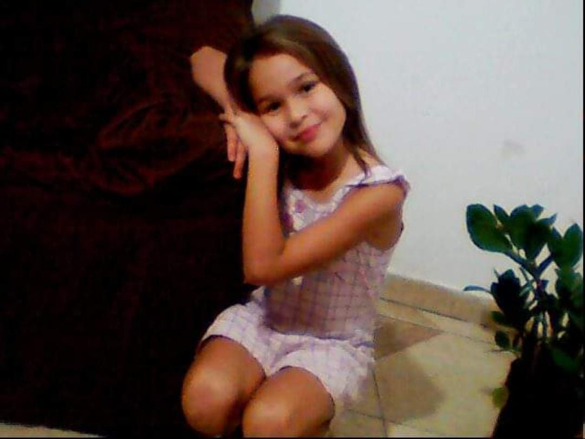

Ana Clara Ferreira Aléssio, é uma mulher Linda, perfeita, sem erros alguns, nascida em Lucélia (onde tudo comecou). e logo pequena se mudou para varias cidades, sendo elas, Junqueiropolis, Holambra, Dracena, E depois de muito tempo, Retornou para sua casa, o aconchego da vóvó detinha, apenas ela voltou para cuidar de sua bisa e la ficou por vários anos.
Nesse tempo que voltou para Lucelia, infelizmente conheceu varios amigos do meu coração, sendo eles conhecidos como, GuiGui gente fina e BreBre casca grossa, que infelizmente não fizeram muito bem a minha princesa, mas se eu cato na rua rua, oia oia, coitados, oia vou até parar de falar to bravo.
Aninha Alessio passou por muitos problemas nessa vida, mais doque todos imaginam, mais do que eu mesmo imaginava e eu não como namorado, e sim como pessoa, posso afirmar (desculpe o termo) que você é foda, por apesar de tudo nesse mundo apesar de tudo oque passou, ela seguiu firme, claro, houve recaidas, mas olhar pra você hoje, ver a mulher que se tornou é de ser aplaudida, que apesar de tudo, não seguiu outro caminho a não ser o de Deus, parabéns meu amor, e pode ter certeza que estarei do seu lado pra te aplaudir em cada uma de suas conquistas, pois estarei junto a ti. E tenho certeza que a Aurora tera tanto tanto tanto orgulho da mãe dela, por tudo oque ela fez, pode ter certeza que irei contar tudinho a ela, deixe comigo.
Logo após ja grandinha sua mamãe (minha sogrinha do coração) resolveram vir para adamantina pra morar, alugaram uma casa, loooooooooooooonge, mas que eu amo muito , um dia passei em frente, nunca imaginando que iria entrar dormir, viver la dentro, e hoje é minha casa e nunca sairei mais de la. ooo deliiiciia.
Parabéns meu amor, por ser essa mulher incrivel que é, P A R A B É N S
{kind=link}
{kind=link}